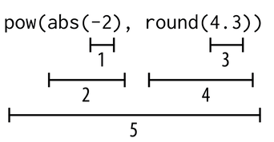
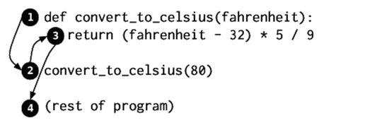

Functions
Contents
Functions#
Previous Lecture#
In the previous lecture we covered the fundamentals of Python:
We covered the basic terminologies such as:
Operators: arithmetic operators (additions, subtraction multiplication, division, modulo)
Operands: the values to the left and right of an operator
Expressions: represent individual values, such as numbers or characters, or a combination of operators and operands
Syntax: set of rules that tells you how you can combine operators and operands/value to write legal/correct Python expressions
Next we covered the basic data types that Python provides. These include: int (integer), float (floating-point), and str (string)
Then we covered examples of using arithmetic operators in detail and operator precedence.
We also covered variables, which are containers for holding values, and how they are named.
These are the fundamentals of Python because they are the basic building block for writing sophisticated code.
Lecture Objectives#
In this lecture we will cover functions. You will learn
What are functions?
What are some advantages of using functions?
What are some built-in Python functions?
How do you write a function?
What is a function call?
What are arguments? What is their purpose?
What is the purpose of the return statement?
Functions: An Overview#
A Functions is a small, self-contained sequence of statements/instructions that has a name. Example: convert Celsius to Fahrenheit
What the advantages of using functions?
Many programs require a particular sequence of statements/instructions to be executed repeatedly. The repeated statements/instructions can be placed with a single function, which can be accessed whenever needed. Therefore, they reduce repeated statements/instructions.
Functions help decompose larger programs into logical subprograms. Such programs are easier to write and debug.
Functions can be executed at any point by using their name
Functions can call other functions
Functions can OPTIONALLY take argument(s) that they can use inside the function
Functions can OPTIONALLY return value(s)
The general form of a function call is as follows:
def <<function_name>>(<<arguments>>):
body
def convert_celsius_to_fahrenheit(degrees_in_celsius):
return 9 / 5 * degrees_celsius + 32
Built-in functions#
abs(-9) – -9 is the argument. Arguments appear between the parenthesis after the function name. Arguments are evaluated left to right.
day_temperature = 3
night_temperature = 10
abs(day_temperature - night_temperature)
7
Because function calls produce values, they can be used in expressions:
abs(-7) + abs(3.3)
10.3

Functions to convert one type of variable to another
int(34.6)
34
int(-4.3)
-4
float(21)
21.0
str(21)
'21'
The Round function can round floats
str(21)
'21'
round(3.8)
4
round(3.3)
3
round(3.5)
4
round(-3.3)
-3
round(-3.5)
-4
The round function can take an OPTIONAL second argument
round(3.141592653,2)
3.14
The help(fxn) function gives information about a function
help(round)
Help on built-in function round in module builtins:
round(number, ndigits=None)
Round a number to a given precision in decimal digits.
The return value is an integer if ndigits is omitted or None. Otherwise
the return value has the same type as the number. ndigits may be negative.
help(pow)
Help on built-in function pow in module builtins:
pow(base, exp, mod=None)
Equivalent to base**exp with 2 arguments or base**exp % mod with 3 arguments
Some types, such as ints, are able to use a more efficient algorithm when
invoked using the three argument form.
Using the pow function
pow(2, 4)
16
pow(2, 4, 3)
1
We can also use function calls as arguments to other functions:
pow(abs(-2), round(4.3))
16
Some other useful functions
min(2, 3, 4)
2
max(2, -3, 4, 7, -5)
7
max(2, -3, min(4, 7), -5)
4
Function objects have memory addresses just like variables:
id(-9)
140362491092912
id(23.1)
140362491092912
show_size = 8.5
id(show_size)
140362491091792
id(abs)
140362540517712
id(round)
140362540524704
Defining your own functions#
The built-in functions (e.g, type, print, input) that Python provides do basic tasks. We can write our own functions that can execute complicated sequence of instructions.
https://www.mathsisfun.com/sets/function.html
def f(x):
squared_x = x * x
return squared_x
def f(x):
squared_x = x ** 2
return squared_x
def f(x):
squared_x = pow(x, 2)
return squared_x
def f(x):
return x**2
def f(x):
return pow(x, 2)
def convert_to_celsius(fahrenheit):
return (fahrenheit - 32) * 5 / 9
convert_to_celsius(80)
What is a function definition?
A function definition is a kind of Python statement. The general form of a function definition is as follows:
def <<function_name>>(<<parameters>>): <<block>>
What is a function header? First line of function definition.
What is a function body? What comes after the function definition and is indented by four spaces.
What is a return statement?
return <<expression>>

Local Variables#
def quadratic(a, b, c, x):
"""ax^2 + bx + c"""
first = a * x ** 2
second = b * x
third = c
return first + second + third
quadratic(2, 3, 4, 0.5)
quadratic(2, 3, 4, 1.5)
13.0
Variables like first, second, and third that are created within a function are called local variables. Local variables get created each time that function is called, and they are erased when the function returns. Because they only exist when the function is being executed, they can’t be used outside of the function. This means that trying to access a local variable from outside the function is an error, just like trying to access a variable that has never been defined is an error.
A function’s parameters are also local variables, so we get the same error if we try to use them outside of a function definition.
The area of a program that a variable can be used in is called the variable’s scope. The scope of a local variable is from the line in which it is defined up until the end of the function.
Tracing Function Calls in the Memory Location#
Let us trace the function call. https://pythontutor.com/visualize.html
def f(x):
x = 2 * x
return x
x = 1
x = f(x + 1) + f(x + 2)
Designing New Functions: A Recipe#
What do you name the function?
What are the parameters, and what types of information do they refer to?
What calculations are you doing with that information?
What information does the function return?
Let us write three functions to practice using the recipe.
Write a function that returns the number of days between
day1andday2, which are both in the range 1-365 (thus indicating the day of the year).Write a function that returns which day of the week it will be
days_aheaddays fromcurrent_weekday.current_weekdayis the current day of the week and is in the range 1-7, indicating whether today is Sunday (1), Monday (2), …, Saturday (7).days_aheadis the number of days after today.Return the day of the week it will be on birthday_day, given that the day of the week is current_weekday and the day of the year is current_day. current_weekday is the current day of the week and is in the range 1-7, indicating whether today is Sunday (1), Monday (2), Saturday (7). current_day and birthday_day are both in the range 1-365.
def days_difference(day1: int, day2: int) -> int:
"""Return the number of days between day1 and day2, which are
both in the range 1-365 (thus indicating the day of the year).
>>> days_difference(200, 224)
24
>>> days_difference(50, 50)
0
>>> days_difference(100, 99)
-1
"""
return day2 - day1
def days_difference(day1, day2):
"""Return the number of days between day1 and day2, which are
both in the range 1-365 (thus indicating the day of the year).
"""
return day2 - day1
def get_weekday(current_weekday, days_ahead):
return (current_weekday + days_ahead) % 7
def get_birthday_weekday(current_weekday, current_day, birth_day):
days_diff = days_difference(current_day, birth_day)
return get_weekday(current_weekday, days_diff)
Variations in functions#
No input; no output; example – print something
One or more input; no output; example – print the input
One or more input: one or more output; example – take two numbers and return their sum
No input; one or more output; example – a random number
Omitting a return Statement: None#
If you do not have a return statement in a function, nothing is produced. By default the None data type is returned.
def f(x):
x = x * 2
res = f(3)
res
print(res)
id(res)
def f(x):
x = x * 2
return None
print(f(3))
None
Summary#
A function definition introduces a new variable that refers to a function object. The return statement describes the value that will be produced as a result of the function when this function is done being executed.
A parameter is a variable that appears between the parentheses of a function header.
A local variable is a variable that is used in a function definition to store an intermediate result in order to make code easier to write and read.
A function call tells Python to execute a function.
An argument is an expression that appears between the parentheses of a function call. The value that is produced when Python evaluates the expression is assigned to the corresponding parameter.
If you made assumptions about the values of parameters or you know that your function won’t work with particular values, write a precondition to warn other programmers.